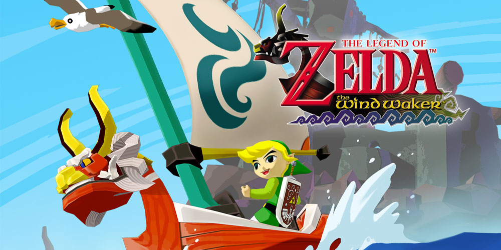

Zelda Wind Waker é o 10º jogo da série de jogos Zelda. Ele se passa depois de Ocarina of Time e antes de Phantom Hourglass.
O jogo acompanha o protagonista Link navegando por um arquipélago em busca de sua irmã Aryll, que foi sequestrada pelo vilão Ganondorf.
Para essa jornada, o jogo oferece múltiplas mecânicas, armas e opções de jogabilidade, o que enriquecem a experiência do jogador.
Chefes do jogo
- Gohma
- Kalle Demos
- Gohdan
- Helmaroc King
- Jalhalla
- Molgera
- Puppet Ganon
- Ganondorf
Itens principais
Início do jogo (Outset Island e Dragon Roost)
- Hero's Shield
- Hero's Sword
- Telescópio
- Wind Waker
- Picto Box
- Vela
- Grappling Hook
Primeira parte do jogo
- Deku Leaf
- Bombas
- Bumerangue
- Hero's Bow
- Master Sword
Segunda parte do jogo
- Mirror Shield
- Botas de Ferro
- Magic Armor
- Hookshot
- Martelo de Caveira